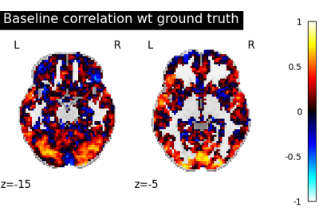
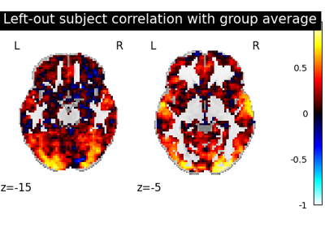
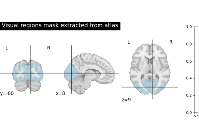
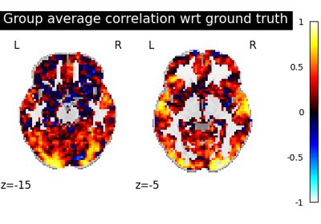
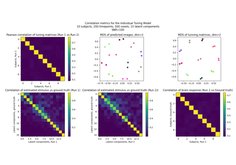
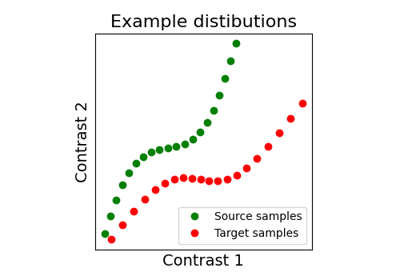

Functional alignment with fmralign : some examples¶

Pairwise functional alignment.
Pairwise functional alignment.


Template-based prediction.

Alignment methods benchmark (pairwise ROI case).
Alignment methods benchmark (pairwise ROI case).

sphx_glr_auto_examples_plot_int_alignment.py
Co-smoothing Prediction using the IndividualNeuralTuning Model.

sphx_glr_auto_examples_plot_toy_int_experiment.py
Co-smoothing Prediction using the IndividualNeuralTuning Model.

Alignment on simulated 2D data.
Alignment on simulated 2D data.